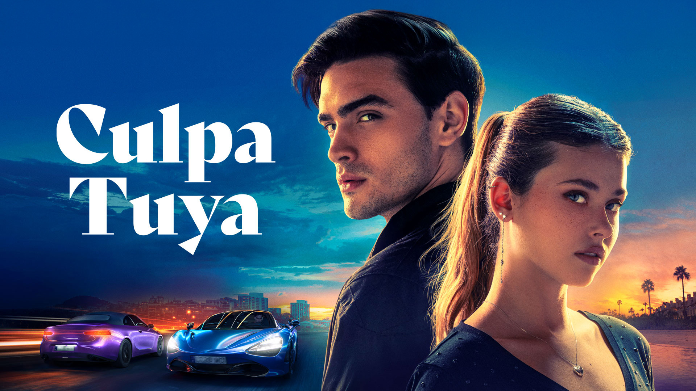

Reseña de la trilogía cinematográfica Culpables
Películas: Culpa mía (2023), Culpa tuya (2024), Culpa nuestra (estreno previsto en octubre de 2025)
Plataforma: Prime Video
Basadas en los libros de: Mercedes Ron
Género: Romance juvenil, drama

Culpa mía (2023) – Amor peligroso y adrenalina
La primera entrega de la trilogía Culpables dio el salto al cine con Culpa mía (2023), una adaptación que busca trasladar a la pantalla grande la intensa y tormentosa historia de Noah y Nick. La película logra captar con bastante fidelidad la esencia rebelde, apasionada y conflictiva que caracteriza a los personajes y a la narrativa original de Mercedes Ron, conservando el espíritu juvenil y el dramatismo que atrapó a miles de lectores.
Aunque, como suele ocurrir en las adaptaciones, algunos elementos del libro fueron omitidos o suavizados, especialmente en cuanto a la profundidad emocional y ciertos conflictos internos, la película destaca por su habilidad para plasmar visualmente la química explosiva entre los protagonistas. La interacción entre Noah y Nick se siente auténtica y convincente, lo que mantiene al espectador inmerso en el torbellino de emociones y tensiones que atraviesan.
Visualmente atractiva y con un ritmo ágil, Culpa mía consigue enganchar tanto a los seguidores fieles del libro como a quienes se acercan a la historia por primera vez. Su puesta en escena, combinada con una banda sonora dinámica y actuaciones naturales, refuerza la sensación de adrenalina y peligro que envuelve a esta historia de amor prohibido, convirtiéndola en una experiencia cinematográfica que complementa muy bien la novela.
- Lo mejor: La fidelidad a los momentos clave del libro, la química entre Nicole Wallace y Gabriel Guevara, y la estética juvenil.
- Lo mejorable: Poca profundidad en los conflictos internos y desarrollo limitado de personajes secundarios.
- ¿Fue fiel al libro? En gran parte, sí.
- ¿Qué cambió? Se simplificaron algunas emociones y escenas.
- ¿Qué logró transmitir? El deseo, la tensión y la rebeldía de los personajes.
- Calificación: ★★★★☆ (4/5)
Culpa tuya (2024) – Pasión, celos y más drama
La segunda entrega de la saga, Culpa tuya (2024), continúa trasladando a la pantalla la evolución de la turbulenta relación entre Noah y Nick, con un enfoque más maduro y cargado de emociones profundas. La película sigue fielmente el hilo narrativo principal del libro, pero también introduce ciertas modificaciones para adaptarse mejor a las exigencias del formato audiovisual, donde el ritmo y la dinámica visual juegan un papel crucial.
En comparación con la novela, algunos giros argumentales se aceleran y ciertas luchas internas de los personajes quedan tratadas de forma más superficial, lo que puede dejar a los fans del libro con ganas de una exploración más profunda. Sin embargo, la cinta no pierde la esencia de la tensión romántica, los celos intensos, las dudas que acechan a los protagonistas y el constante peligro emocional que los envuelve.
Además, la incorporación de nuevos personajes y obstáculos en la trama aporta frescura y dinamismo, enriqueciendo la historia y manteniendo el interés del espectador. La película logra mantener un equilibrio entre drama y pasión, reforzando los temas centrales de la novela y ofreciendo una experiencia visual emocionante que complementa la intensidad de la saga literaria.
- A destacar: Intensidad emocional, conflictos más profundos, escenas memorables.
- A mejorar: Algunos momentos clave resultan apresurados y faltó mayor introspección.
- ¿Fue fiel al libro? En lo esencial, sí.
- ¿Qué cambió? Se omitieron detalles secundarios y se aceleraron algunos eventos.
- ¿Qué logró transmitir? La fragilidad del amor cuando se enfrenta al pasado y los miedos.
- Calificación: ★★★★☆ (4/5)
Culpa nuestra – Estreno previsto para octubre de 2025
La esperada conclusión de la trilogía Culpables ya tiene fecha. Culpa nuestra, la tercera entrega cinematográfica basada en la novela homónima de Mercedes Ron, llegará a Prime Video en octubre de 2025. Este cierre promete ser el más intenso y emocional de la saga, llevando a los protagonistas, Noah y Nick, al límite de sus emociones y decisiones.
Según lo anunciado, la película abordará los conflictos internos más profundos de los personajes, así como las consecuencias de sus elecciones pasadas. Se espera que esta entrega refleje el crecimiento personal de ambos, ofreciendo una mirada más madura y reflexiva sobre el amor, el perdón y la reconstrucción emocional. A diferencia de las dos películas anteriores, esta etapa final parece apostar por un tono más serio, sin perder la pasión ni la tensión que caracterizan a la historia.
Los seguidores de la saga aguardan con gran expectativa este desenlace, que promete cerrar el ciclo de forma coherente y emotiva, respetando la evolución de los personajes a lo largo de las novelas. Sin duda, Culpa nuestra será una cita obligada tanto para los lectores como para quienes han seguido la historia a través de la pantalla.
Comunicado oficial:
“Culpa nuestra, la esperada conclusión de la trilogía Culpables, llegará en octubre de 2025 exclusivamente por Prime Video. Prepárate para el desenlace de una historia de amor que desafió todas las reglas.”
- ¿Será fiel al libro? Está por verse.
- ¿Qué esperamos que mantenga? La intensidad emocional y el cierre justo para sus protagonistas.
- ¿Qué esperamos que logre transmitir? La evolución de un amor que sobrevivió a todo.
Conclusión general
La trilogía Culpables de Mercedes Ron, compuesta por Culpa mía, Culpa tuya y Culpa nuestra, ha logrado consolidarse como un fenómeno dentro del género romance juvenil y new adult. A través de una narrativa intensa, personajes emocionalmente complejos y temas como el amor prohibido, la identidad personal y el crecimiento emocional, la autora ha creado una historia que conecta profundamente con su público joven.
Las adaptaciones cinematográficas, producidas por Prime Video, han sabido captar la esencia de la saga, manteniendo la pasión, el drama y la evolución de Noah y Nick, aunque con las adaptaciones necesarias al formato audiovisual. El éxito de las dos primeras películas y la expectativa por el cierre final en Culpa nuestra confirman el impacto de esta historia tanto en la literatura como en la pantalla.
En definitiva, Culpables es una trilogía que habla de los errores, las segundas oportunidades y el valor de amar —a otros y a uno mismo— incluso cuando el camino está lleno de obstáculos. Una historia que, con sus luces y sombras, deja huella en quienes se atreven a sumergirse en ella.
- Trilogía completa (valoración hasta ahora): ★★★★☆ (4/5)
- Recomendadas para: Jóvenes adultos, fans de los libros, amantes del drama romántico con tintes rebeldes.